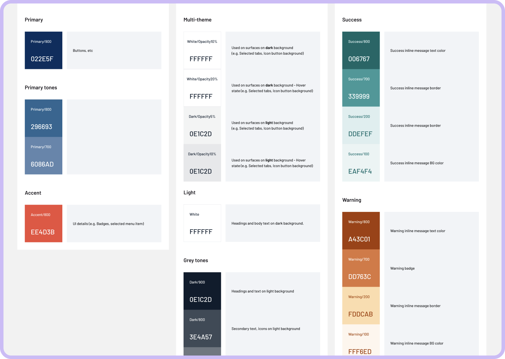
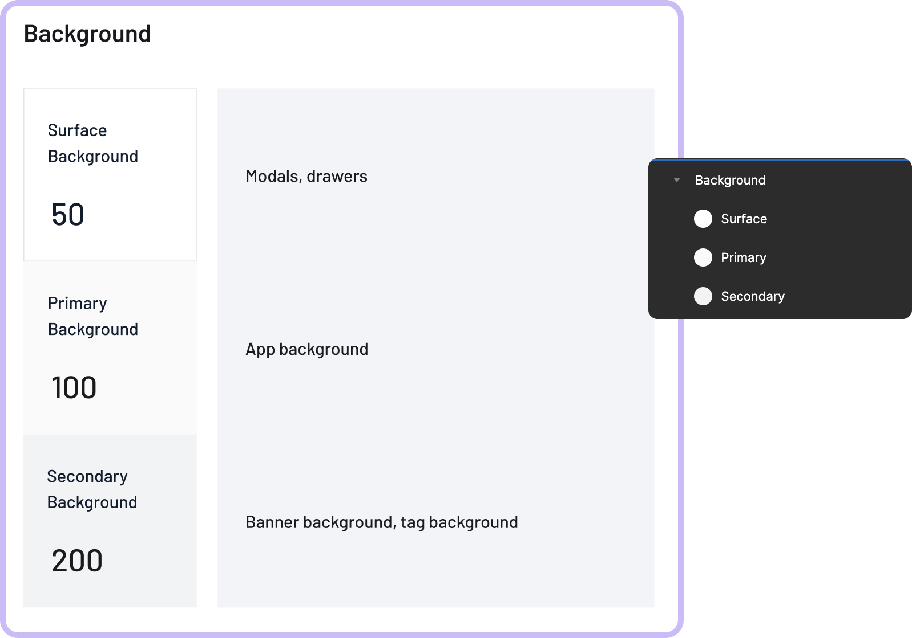

Implementing a Semantic Colour System to Support Theming
Role: Product designer
Timeline: December 2022 - February 2023

Overview
I was tasked with improving the colour system of an existing design library for an app that was about to launch its MVP. The goal was to create a system that would increase consistency across multiple products, improve the usability of the design library, and support dark theme in the future.
Problem
The existing colour system resulted in inconsistencies across products and made it hard for developers to figure out which colours were used where. This caused confusion and inefficiency in the design and development process. Additionally, we needed to support dark theme, which proved to be hard with the current system.
Process
To address these issues, our front-end developers proposed implementing a semantic colour system. First, we needed to know how colour was used in the designs. I started by creating this overview of and proposed a new naming system. I then worked closely with the development team to facilitate alignment between design and development, to avoid the teams moving in different directions.
The system had to cater to a small team since we were only two designers and two front-end developers. This brought additional challenges as the main goal was to create something that would increase consistency across multiple products, improve the usability of the design library, improve our collaboration across the team while being simple and easy to maintain.
I started by generating colour palettes from the existing colours in the library. These shades would be used as tokens for the semantic style definitions. To create a semantic system, I started by defining commonly used styles like accent colours, text, and icons. I went back and forth between the system and the designs, breaking colour dependencies whenever needed, and creating more styles. After aligning with the team, it was time to update the library. I created an overview of the library components to check if the system held up and created more styles when needed.
When updating the colour styles, I added short descriptions of how colours were used so that other designers could quickly understand the system and how to use it. I also created some instructions on the process of generating new colour styles.
Challenges
The goal of this initiative was to create a system that would improve the workflow and collaboration of the team while being simple and easy to maintain. This meant defining the least amount of styles, which inevitably resulted in more dependencies between them. However, I believe it was a price worth paying for the benefits of implementing this system - more consistency, better collaboration, better documentation, and of course, theming for free.
Results
The new semantic colour styles were named according to their usage, making it easy for designers and developers to understand how to use them. Multiple themes can now be achieved by replacing the tokens used on colour styles. The new system increased consistency across multiple products, improved the usability of the design library, and made it easier for the design and development teams to collaborate effectively.
Conclusion
Overall, the implementation of a semantic colour system was a success. The new system provided a scalable and flexible solution that was easy to use and maintain, resulting in better collaboration and a more efficient design process.